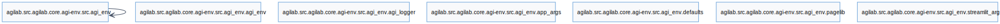

agi-env API
This is a module share between core/agi-core and agilab to set all the path required by both
Usage Example
Instanciation
Note
AgiEnv behaves as a singleton. Repeated instantiation updates the same
environment instance; call AgiEnv.reset() before configuring a new
environment, or AgiEnv.current() to access the active one.
Reference
{kind=link}
AGILab environment bootstrapper and utility helpers.
The module exposes the AgiEnv class which orchestrates project discovery,
virtual-environment management, packaging helpers, and convenience utilities used
by installers as well as runtime workers. Supporting free functions provide small
parsing and path utilities leveraged during setup.
Notes on singleton and pre‑init behavior
AgiEnvbehaves as a true singleton. Instance attributes are the source of truth; class attribute reads proxy to the singleton instance when initialised. Methods and descriptors are never shadowed by the delegation.A small subset of helpers is pre‑init safe and can be used before constructing an instance:
AgiEnv.set_env_var(),AgiEnv.read_agilab_path(),AgiEnv._build_env(), andAgiEnv.log_info(). These functions avoid hard failures when the shared logger/environment has not been configured yet. Logging in that mode is best‑effort and may fall back toprint.
- class agi_env.agi_env.AgiEnv(apps_dir=None, app=None, verbose=None, debug=False, python_variante='', **kwargs)[source]
Bases:
objectEncapsulates filesystem and configuration state for AGILab deployments.
Singleton access
Repeated instantiation reuses the same instance. Use
AgiEnv.reset()to drop it, orAgiEnv.current()to retrieve it.Reading
AgiEnv.attrproxies to the singleton’s attribute when the instance exists; callables/properties are always returned from the class.
- EXTRA_INDEX_URL = 'https://pypi.org/simple'
- GUI_SAMPLING = None
- INDEX_URL = 'https://test.pypi.org/simple'
- TABLE_MAX_ROWS = None
- app = None
- apps_dir = None
- benchmark = None
- clone_directory(source_dir, dest_dir, rename_map, spec, source_root)[source]
Recursively copy + rename directories, files, and contents, applying renaming only on exact path segments.
- clone_project(target_project, dest_project)[source]
Clone a project by copying files and directories, applying renaming, then cleaning up any leftovers.
- Parameters:
target_project (
Path) – Path under self.apps_dir (e.g. Path(“flight_project”))dest_project (
Path) – Path under self.apps_dir (e.g. Path(“tata_project”))
- copy_existing_projects(src_apps, dst_apps)[source]
Copy
*_projecttrees fromsrc_appsintodst_appsif missing.
- static create_junction_windows(source, dest)[source]
Create a directory junction on Windows.
- Parameters:
source (Path) – The target directory path.
dest (Path) – The destination junction path.
- create_rename_map(target_project, dest_project)[source]
Create a mapping of old → new names for cloning. Includes project names, top-level src folders, worker folders, in-file identifiers and class names.
- Return type:
dict
- static create_symlink_windows(source, dest)[source]
Create a symbolic link on Windows, handling permissions and types.
- Parameters:
source (Path) – Source directory path.
dest (Path) – Destination symlink path.
- debug = False
-
envars:
dict|None= {}
- err_log = None
- extract_base_info(base, import_mapping)[source]
Return the base-class name and originating module for
basenodes.
- get_base_classes(module_path, class_name)[source]
Inspect
module_pathAST to retrieve base classes ofclass_name.
- get_base_worker_cls(module_path, class_name)[source]
Return the base worker class name and module for
class_name.
- get_import_mapping(source)[source]
Build a mapping of names to modules from
importstatements insource.
- static has_admin_rights()[source]
Check if the current process has administrative rights on Windows.
- Returns:
True if admin, False otherwise.
- Return type:
bool
- has_agilab_anywhere_under_home(path)[source]
Return
Truewhenpathsits under the user’s homeagilabtree.- Return type:
bool
- humanize_validation_errors(error)[source]
Format pydantic-style validation
errormessages for human consumption.
- hw_rapids_capable = None
- init_done = False
- init_envars_app(envars)[source]
Cache frequently used environment variables and ensure directories exist.
- install_type = None
-
is_local_worker:
bool= False
-
is_source_env:
bool= False
- is_worker_env = False
- static locate_agi_installation(verbose=False)[source]
Deprecated alias for locate_agilab_installation().
- static locate_agilab_installation(verbose=False)[source]
Attempt to locate the installed AGILab package path on disk.
- static log_info(line)[source]
Lightweight info logger retained for legacy hooks (e.g. pre_install scripts).
- Return type:
None
- logger = None
- out_log = None
- pyvers_worker = None
- static read_agilab_path(verbose=False)[source]
Return the persisted AGILab installation path if previously recorded.
- classmethod reset()[source]
Drop the cached singleton so a fresh environment can be bootstrapped.
- Return type:
None
-
resources_path:
Path|None= PosixPath('/Users/example/.agilab')
- async static run(cmd, venv, cwd=None, timeout=None, wait=True, log_callback=None)[source]
Run a shell command inside a virtual environment. Streams stdout/stderr live without blocking (Windows-safe). Returns the full stdout string.
- async run_agi(code, log_callback=None, venv=None, type=None)[source]
Asynchronous version of run_agi for use within an async context.
- async static run_async(cmd, venv=None, cwd=None, timeout=None, log_callback=None)[source]
Run a shell command asynchronously inside a virtual environment. Streams stdout/stderr live with sensible levels (packaging-aware). Returns the last non-empty line among stderr (preferred) then stdout. Raises on non-zero exit (logs stderr tail).
- snippet_tail = 'asyncio.get_event_loop().run_until_complete(main())'
- target = None
- uv = None
- verbose = None
- class agi_env.agi_env.ContentRenamer(rename_map)[source]
Bases:
NodeTransformerA class that renames identifiers in an abstract syntax tree (AST). .. attribute:: rename_map
A mapping of old identifiers to new identifiers.
- type:
dict
- __init__(rename_map)[source]
Initialize the ContentRenamer with the rename_map.
- Parameters:
rename_map (dict) – Mapping of old names to new names.
- generic_visit(node)
Called if no explicit visitor function exists for a node.
- visit(node)
Visit a node.
- visit_AnnAssign(node)[source]
Visit and process an AnnAssign node in an abstract syntax tree.
- Parameters:
self – The AST visitor object.
node – The AnnAssign node to be visited.
- Returns:
The visited AnnAssign node.
- Return type:
AnnAssign
- visit_Assign(node)[source]
Visit and process an assignment node.
- Parameters:
self – The instance of the visitor class.
node – The assignment node to be visited.
- Returns:
The visited assignment node.
- Return type:
ast.Node
- visit_Attribute(node)[source]
Visit and potentially rename an attribute in a node.
- Parameters:
node – A node representing an attribute.
- Returns:
The visited node with potential attribute renamed.
- Return type:
node
- Raises:
None. –
- visit_ClassDef(node)[source]
Visit and potentially rename a ClassDef node.
- Parameters:
node (ast.ClassDef) – The ClassDef node to visit.
- Returns:
The potentially modified ClassDef node.
- Return type:
ast.ClassDef
- visit_Constant(node)
- visit_For(node)[source]
Visit and potentially rename the target variable in a For loop node.
- Parameters:
node (ast.For) – The For loop node to visit.
- Returns:
The modified For loop node.
- Return type:
ast.For
Note
This function may modify the target variable in the For loop node if it exists in the rename map.
- visit_FunctionDef(node)[source]
Rename a function node based on a provided mapping.
- Parameters:
node (ast.FunctionDef) – The function node to be processed.
- Returns:
The function node with potential name change.
- Return type:
ast.FunctionDef
- visit_Global(node)[source]
Visit and potentially rename global variables in the AST node.
- Parameters:
self – The instance of the class that contains the renaming logic.
node – The AST node to visit and potentially rename global variables.
- Returns:
The modified AST node with global variable names potentially renamed.
- Return type:
AST node
- visit_Import(node)[source]
Rename imported modules in ‘import module’ statements.
- Parameters:
node (ast.Import) – The import node.
- visit_ImportFrom(node)[source]
Rename modules and imported names in ‘from module import name’ statements.
- Parameters:
node (ast.ImportFrom) – The import from node.
- visit_Name(node)[source]
Visit and potentially rename a Name node in the abstract syntax tree.
- Parameters:
self – The current object instance.
node – The Name node in the abstract syntax tree.
- Returns:
The modified Name node after potential renaming.
- Return type:
ast.Node
Note
This function modifies the Name node in place.
- Raises:
None –
- visit_arg(node)[source]
Visit and potentially rename an argument node.
- Parameters:
self – The instance of the class.
node – The argument node to visit and possibly rename.
- Returns:
The modified argument node.
- Return type:
ast.AST
Notes
Modifies the argument node in place if its name is found in the rename map.
- Raises:
None. –
- visit_nonlocal(node)[source]
Visit and potentially rename nonlocal variables in the AST node.
- Parameters:
self – An instance of the class containing the visit_nonlocal method.
node – The AST node to visit and potentially modify.
- Returns:
The modified AST node after visiting and potentially renaming nonlocal variables.
- Return type:
ast.AST
- agi_env.agi_env.is_packaging_cmd(cmd)[source]
Return
Truewhencmdappears to invokeuvorpip.- Return type:
bool
- agi_env.agi_env.normalize_path(path)[source]
Return
pathcoerced to a normalised string representation.On Windows, ensure relative inputs are resolved to absolute paths to match historical expectations in tests and config consumers. On POSIX, preserve the POSIX-style representation of the provided path.
- agi_env.agi_env.parse_level(line, default_level)[source]
Resolve a logging level token found in
line.- Parameters:
line – The text that might contain a logging level marker.
default_level – The integer level returned when no explicit marker is present.
- Returns:
The numeric logging level understood by
logging.- Return type:
int
- agi_env.agi_env.strip_time_level_prefix(line)[source]
Remove a
HH:MM:SS LEVELprefix commonly emitted by log handlers.- Return type:
str
{kind=link}